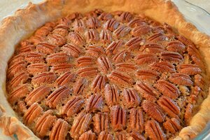

Pecan Pie

Description
By IHART44 from
AllRecipes.com,
this is the most amazing pecan pie.
Once
you start eating this sweet treat you can't stop!
Ingredients
- 1 1/2 cups all-purpose flour
- 1/2 teaspoon salt
- 2 tablespoons white sugar
- 1/2 cup butter, chilled
- 4 tablespoons ice water
- 3 eggs, beaten
- 3/4 cup light corn syrup
- 2 tablespoons dark corn syrup
- 3/4 cup light brown sugar
- 3 tablespoons butter, melted
- 1 pinch salt
- 1/2 cup pecans, finely crushed
- 1 cup pecans, quartered
- 1 cup pecan halves
Steps
- Preheat oven to 350 degrees F (175 degrees C).
- To Make Crust: In a medium bowl, combine flour, salt and white sugar. Cut butter into flour mixture until it resembles coarse crumbs.
Gradually sprinkle the water over the dry mixture, stirring until dough comes together enough to form a ball.
- On a floured surface flatten dough ball with rolling pin. Roll out into a circle that is one inch larger than pie dish.
Place pie shell into dish and refrigerate until pie filling is complete.
- To Make Pie Filling: In a medium bowl, mix together eggs, light and dark corn syrups, brown sugar, butter, salt and finely crushed pecans.
Spread quartered pecans over bottom of refrigerated pie crust. Pour syrup mixture over top of pecans, then arrange pecan halves on top of pie.
- Bake in a preheated 350 degrees F (175 degrees C) oven for one hour or until firm; let cool for one hour before serving.